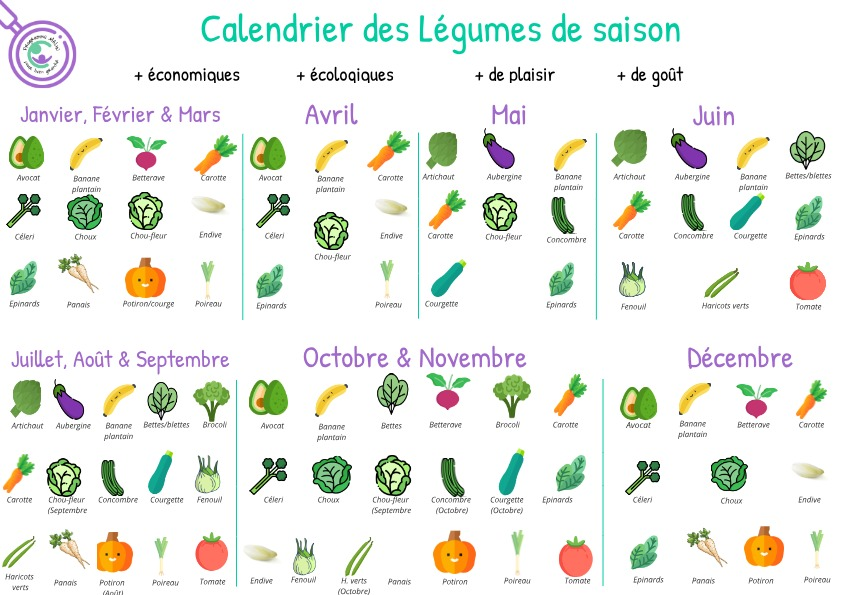
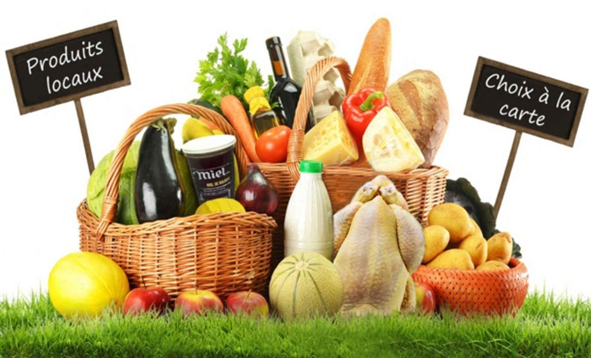

Si vous cherchez comment réduire vos dépenses en légumes et autres racines, lisez cet article ! Des légumes du printmps à ceux de l'hiver, faites le plein à chaque saison sans vous vider les poches !
Pour commencer...
... Qu'est-ce qu'un légume de saison ? Un légume de saison est un aliment qui va pousser et se développer naturellement dans une saison précise. Par exemple, un potiron ne prendra pas naturellement racine au printemps, mais en automne. De même, un artichaut ne sera JAMAIS présent naturellement en hiver. C'est un légume estival.
Savoir les reconnaître et les différencier et essentiel si on veut préserver sa santé et son porte-monnaie. Essentiel, oui, car mettez-vous bien en tête que tous les artichauts que vous verrez en hiver ou dans n'importe quelle autre saison sont pesticidés A MORT. Mais vraiment. C'est limite si ils n'en ont pas dans leur ADN (enfait si, ils en ont).
Les légumes pesticidés sont les PIRES du marché. Imprégnés de pesticides jusqu'aux confins de leurs gènes, ils poussent vite, deviennent très gros et très vifs, et pourrissent dès que vous les sortez du supermarché. Les légumes de saison, eux, vous pourrez les laisser en dehors du frigo pendant 24 heures qu'ils seront encore frais et juteux le lendemain (attention aux mouches, quand même).
Bref. Maintenant que vous savez de quoi on parle exactement, nous pouvons rentrer dans le vif du sujet.
Les bénéfices pour vous, votre porte-monnaie... et l'éco
Manger des légumes de saison, c'est très bénéfique pour vous et votre porte-monnaie. Un, vous ne serez plus pesticidé intérieurement par tous les légumes chelous-bizarres imprégnés de ces produits chimiques vendus en supermarché. Deux, le second n'hurlera plus à la mort à chaque séance de courses, et vous pourrez enfin économiser pour vous offrir un voyage aux Bahamas.
Attendez, je m'explique.
Le corps, lui, bénéficie de l'apport de qualité des légumes de saison. Frais, juteux, pleins de vitamines et gorgés de soleil, ils vous imprégneront des tous les minéraux essentiels au bon fonctionnement de votre organisme. Attention, quand même, à ne pas en abuser. Ensuite, ils seront meilleurs dans votre bouche. Oui oui. Qui dit légume de saison, dit légumes frais et donc, plat SENSATIONNEL ET INCROYABLEMMENT BON ET DELICIEUX. De quoi en mettre plein la vue et la bouche à vos proches.
Passons aux bienfaits pour votre porte-monnaie et l'économie. Vos poches ne seront plus vides à chaque fin de mois, vous pourrez économiser, et de plus, cela encourage la production locale. Cherchez autour de vous ! Je suis sûre certaine qu'il y a un ou deux maraîchers qui aimeraient bien qu'on vienne acheter leurs légumes. Après tout, ils y mettent du coeur, et ce serait dommage de gâcher. Les légumes de saison coûtent plus ou moins cher selon leur lieu de production, importés ou non, agriculture biologique ou non... etc. A vous de vous renseigner et de chercher. Quoiqu'il en soit, une chose est sûre : l'économie de votre ville et la vôtre n'en seront que plus ragaillardies.
Voici...
... une liste des légumes par saison.
Légumes hivernaux (Décembre, Janvier, Février & Mars)
- - Avocat
- Betterave
- Carotte
- Céleri
- Chou
- Chou-fleur
- Endive
- Épinards
- Panais
- Poireau
- Potiron
Légumes printaniers (Avril, Mai, Juin)
- - Artichaut
- Aubergine
- Avocat
- Betteraves
- Carotte
- Chou-fleur
- Concombre
- Courgette
- Épinards
- Fenouil
- Haricots verts
- Tomate
Légumes estivaux (Juillet, Août & Septembre)
- - Artichaut
- Aubergine
- Betteraves
- Brocoli
- Carotte
- Chou-fleur
- Concombre
- Courgette
- Fenouil
- Haricots verts
- Panais
- Poireau
- Poivron
- Tomate
Légumes automnaux (Octobre & Novembre)
- - Avocat
- Bettes
- Betterave
- Brocoli
- Carotte
- Céleri
- Chou
- Chou-fleur
- Concombre
- Courgette
- Épinards
- Fenouil
- Haricots verts
- Panais
- Poireau
- Poivron
- Potiron
- Tomate
Et pour ceux qui auraient la flemme de tout lire, je vous ai mis un tableau récapitulatif assez sympa. Et oui, il y a encore du texte. Lisez-le maintenant. Vous n'avez plus le choix.
Où trouver des légumes de saison ?
Comme je vous le disais dans le point n°2 : cherchez autour de vous. Maraîchers, commerçants locaux... Il doit au minimum y en avoir un, tout de même. Et si vous n'en trouvez pas dans votre ville, allez dans une autre près de chez vous. Tenez, il y a aussi les foires agricoles. Ce sont souvent des endroits privilégiés pour acheter des légumes frais, de saison, et issus directement de l’agriculture locale. Pensez aussi aux paniers bio ou aux abonnements chez des producteurs locaux. Ca vous garantit une livraison régulière de produits de saison (et des efforts jusqu'au bout du monde pour trouver des carootes) tout en soutenant l’économie de votre région. Et si vous préférez la fénéantise, il existe des applications ou des sites internet spécialisés qui vous aident à repérer les producteurs et points de vente proches de chez vous. Rien de plus facile, n'est-ce pas ?
En résumé...
Le légumes de saison c'est TOP.
Les légumes hors-saison c'est NON.
Les pesticides à foision c'est STOP.
Le portefeuille qui craque C'EST NON.
L'agro-bio près de chez soi c'est COOL.
Bref, vous l'aurez compris. Manger des légumes de saison, c'est s'assurer une santé (quasi) excellente et un train de vie décent (question monnaie).
Merci d'avoir lu cet article !
Conseils et astuces
- N°1 : Prévilégiez les légumes de saison et produits localement pour éviter le pesticidage interne.
- N°2 : Préservez l'intégrité physique et numérique de votre porte-monnaie en achetant uniquement de saison, localement (généralement beaucoup moins cher) et selon vos besoins du mois.
- N°3 : Rendez-vous chez les producteurs à côte de chez vous pour voir s'il y en a un qui propose des abonnements mensuels.
- N°4 : Faites des efforts ! Je sais que ce n'est pas facile de changer ses habitudes du jour au lendemain, mais avec un peu de volonte et de persévérance, on peut y arriver !